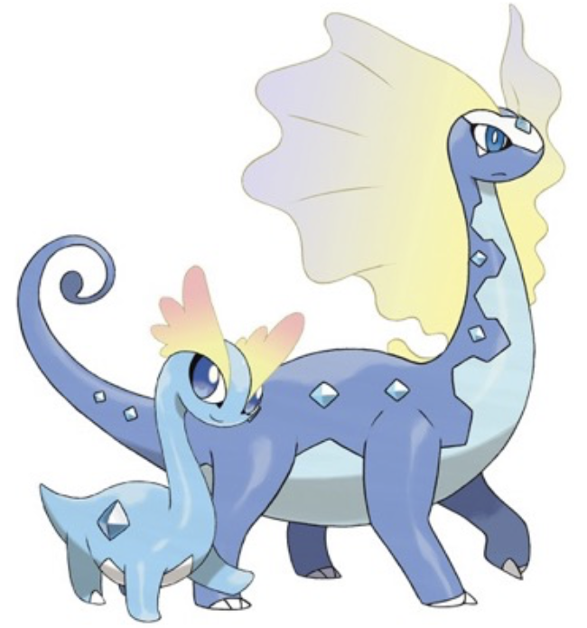

All About Fossil Pokemon
Have you ever wondered what real-life fossils inspired the designs of the fossil Pokemon? This website showcases and shares some fun facts about a few of the ancient animals that fossil Pokemon designs may have been based on. Click on a fossil in the ground to find out more about it!
Ammonites
First appearance: around 450 million years ago
Extinction: around 66 million years ago
Omanyte and Omastar closely resemble ammonites, an extinct group of cephalopods known for their spiral-shaped shell. Because of how common they were and how quickly they evolved over time, ammonite fossils are often used as a way to tell the ages of surrounding rocks and fossils. There are estimated to be over 20,000 species of ammonite discovered, ranging from a few millimeters to around 3 meters in diameter!

Sources: The Natural History Museum in London, Unit 11 Notes
Horseshoe Crabs

First appearance: around 445 million years ago
Extinction: None, they still exist to this day!
One animal that seems to have inspired the designs of Kabuto and Kabutops is the horseshoe crab. Horseshoe crabs are sometimes referred to as living fossils, since they have persisted for hundreds of millions of years through several mass extinction events, all while barely evolving. They originally lived in shallow seas alongside their now-extinct relatives, trilobites, another arthropod that may have influenced these Pokemon designs. Fun fact: horseshoe crabs have nine eyes across their body, and they can also sense light through photoreceptors on their tail!
Sources: Maryland Department of Natural Resources, National Wildlife Federation, Unit 11 Notes. Fossil image from New Mexico Museum of Natural History & Science.
Pterosaurs
First appearance: around 220 million years ago
Extinction: around 65 million years ago
The features of Aerodactyl resemble those of pterosaurs, a group of winged reptiles that lived during the same time as the dinosaurs. Pterosaurs are believed to be the first vertebrates to have achieved active flight, which means they flew by using their own body instead of relying solely on air currents. Some pterosaurs were the size of a pigeon, but the largest known pterosaur, Quetzalcoatlus, had a wingspan of almost 40 feet! Despite their size, pterosaurs were still able to fly because of their hollow bones. Pteranodon, a genus of pterosaurs, had a wingspan of 20-25 feet while only weighing about 25 pounds, thanks to its 1-millimeter-thick bones.
Sources: UC Berkeley Museum of Paleontology, US National Park Service, Unit 11 Notes
Crinoids
First appearance: around 485 million years ago
Extinction: None, they still exist to this day!
Lileep and Cradily are inspired by crinoids, ocean-dwelling animals that are sometimes called "sea lilies" because of their colorful, flower-like appearance. Crinoids live a mostly stationary life on the seafloor, but they are not plants. They are related to animals such as starfish, sea urchins, and sand dollars. Crinoids were abundantly common throughout the Paleozoic era, which was 490-250 million years ago, and their fossils fill up limestone deposits that can go on for hundreds of square miles.
Sources: Nova Southeastern University, Missouri Department of Natural Resources, Unit 11 Notes
Anomalocaris
First appearance: around 520 million years ago
Extinction: around 500-480 million years ago
Anomalocaris was a Cambrian explosion arthropod thought to be one of the earliest animals to hunt and eat other animals. It was possibly around 0.82 to 3.2 feet long, which was extremely large for animals at the time. Most believe that the two sharp, hooked appendages coming out of its head were used to capture prey. Because Anomalocaris fossils were discovered as separate pieces of its body, its presumed appearance has changed drastically over the years. Each part was described separately as a shrimp, part of a jellyfish, a sea cucumber, and more before it was suggested by Derek Briggs and Harry Whittington that they all made up one animal. The name Anomalocaris means strange (anomalo) shrimp (caris).
Sources: The Burgess Shale (Yoho National Park in Canada), UC Berkeley Museum of Paleontology, Unit 11 Notes
Pachycephalosaurus
First appearance: around 69 million years ago
Extinction: around 66 million years ago
Pachycephalosaurus was a herbivorous, bipedal dinosaur that is notable for the unusual hard dome it had on its head. It is unknown what the dome was used for, but some scientists believe Pachycephalosaurus used it like a battering ram to headbutt objects or other dinosaurs. One theory is that they had headbutting competitions to fight for superiority. This is quite similar to the behavior of Cranidos and Rampardos within the Pokemon games.
Sources: The Natural History Museum in London, Unit 11 Notes. Fossil image from Wikipedia.
{kind=link}
Chasmosaurines
First appearance: around 78 million years ago
Extinction: around 66 million years ago
Chasmosaurines were a group of herbivorous, quadrupedal dinosaurs known for the large frills around their heads. The most well-known Chasmosaurine is the Triceratops. It is thought that the frills of Chasmosaurines like the Triceratops were used to defend their neck from attackers. This aligns with the highly defensive statistics of Shieldon and Bastiodon.
Sources: The Natural History Museum in London, Wikipedia, Unit 11 Notes
Archelon
First appearance: around 74 million years ago
Extinction: Unknown
Tirtouga and Carracosta may be inspired by Archelon, the largest turtle that has ever been documented. This car-sized animal was around 15 feet long and is estimated to have weighed over 4,500 pounds! It was capable of living for over 100 years, and it likely had a very strong bite based on the shape of its beak. Despite being from so long ago, Archelon is quite similar to modern sea turtles, outside of its size.
Sources: Black Hills Institute of Geological Research, Encyclopedia Britannica, Unit 11 Notes. Fossil image and illustration from Wikipedia.
Archaeopteryx

First appearance: around 149 million years ago
Extinction: Unknown
Archaeopteryx is known as the "first bird" and is considered to be one of the most important steps towards our current understanding of evolution. The discovery of the first Archaeopteryx fossil, a feather, provided evidence for Darwin's theory of evolution during a time when evolution was not a widely accepted concept. Archaeopteryx is considered to be an evolutionary stage between dinosaurs and modern birds. It had long feathers and wings, but it is uncertain whether it was capable of flying or not. It also had sharp teeth and claws on its wings. Unlike Archen and Archeops, Archaeopteryx seemed to have black feathers (at least one).
Sources: The Natural History Museum in London, UC Berkeley Museum of Paleontology, Unit 11 Notes
Tyrannosaurus Rex
First appearance: around 85 million years ago
Extinction: around 66 million years ago
Tyrunt and Tyrantrum are based on the famous Tyrannosaurus Rex. This enormous dinosaur was 40 feet long and 15 feet tall. Its 4-foot-long jaws had teeth the size of bananas, which were capable of biting through bone. In addition to attacking prey, the T-Rex species fought each other for unknown reasons, shown by T-Rex fossils that have bite marks from other Tyrannosaurs. Tyrannosaurus Rex has understandably been depicted in films such as Jurassic Park to be a ferocious and quick predator, but this may not be factually accurate. Evidence has shown that the T-Rex could only move at around 10-20 MPH, and some scientists think that it may have been a scavenger.
Sources: UC Berkeley Museum of Paleontology, The Natural History Museum in London,American Museum of Natural History, Unit 11 Notes
Amargasaurus
First appearance: around 132 million years ago
Extinction: Unknown
Amargasaurus was a sauropod discovered in Argentina. It was around 30 feet long, and its most distinctive feature was the two rows of spines that protruded from its neck and back. Some scientists think that the spines acted as supports for two sails on its back, which is what the designs for Amaura and Aurorus drew inspiration from. However, it could also be that they were just regular spikes covered in keratin. Little is known about Amargasaurus because there has only been one fossil of its kind found.
Sources: Western Australian Museum, Science Museum of Minnesota, Unit 11 Notes